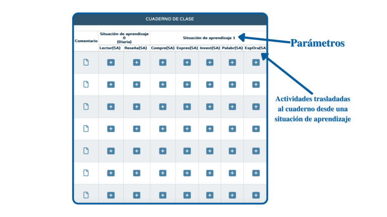
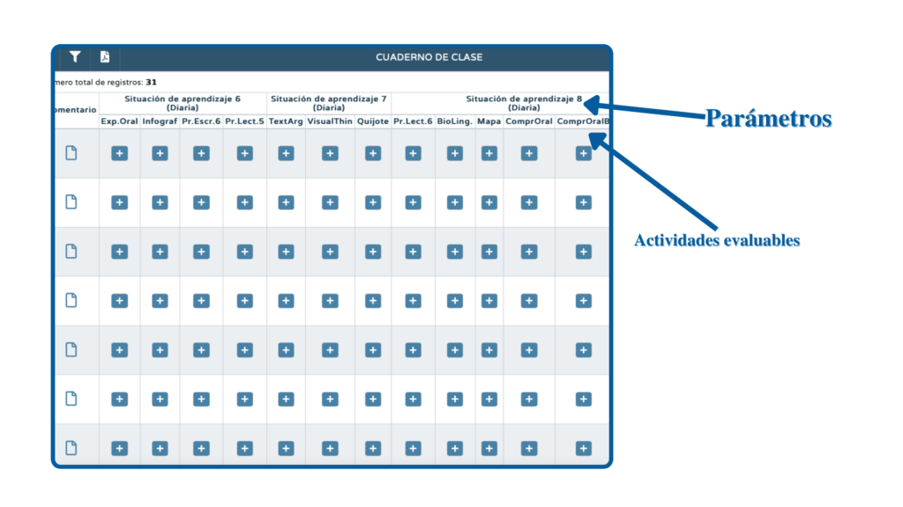
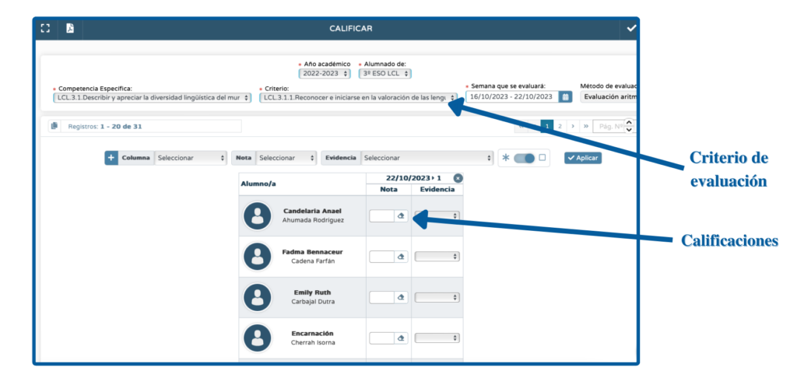

Creando nuevos mundos...

¡Enhorabuena! Si has llegado hasta aquí quiere decir que has completado con éxito las dos primeras fases de nuestro REA: la de planificación y la de configuración. ¡Bien hecho!
Y ahora nos adentramos en la fase de diseño, es decir, vamos a crear ya nuestro cuaderno de Séneca para usarlo en clase. ¿Me acompañas? ¡Vamos con ello!
Existen hasta tres formas diferentes de configurar y usar el cuaderno de Séneca, cada una con sus ventajas y sus inconvenientes. No obstante, no son excluyentes y podemos optar por una u otra según consideremos en cada momento del curso. Vamos a verlas y a analizarlas una a una:
Método 1: grabando situaciones de aprendizaje en Séneca y trasladando sus actividades a nuestro cuaderno.
Sin duda, es el método más completo y el más recomendable, pero también el que más tiempo exige. Consiste en elaborar y grabar una situación de aprendizaje en Séneca y trasladar su secuencia didáctica a nuestro cuaderno de Séneca para así poder calificar las actividades.
Las ventajas de este método son:
- supone una planificación completa y exhaustiva del trabajo en el aula;
- el traslado de las actividades es muy rápido, por lo que podemos crear nuestro cuaderno en segundos si tenemos ya grabadas nuestras situaciones de aprendizaje;
- las situaciones de aprendizaje aparecen en la programación didáctica automáticamente;
- es posible calificar varias veces una misma actividad evaluable (si el parámetro lo tenemos configurado como diario);
- permite el trabajo colaborativo (una misma situación elaborada por varios docentes);
- es posible aprovechar el trabajo para el curso siguiente (si tenemos los mismos niveles, podemos trasladar las situaciones del curso anterior al presente fácilmente).
Los inconvenientes son:
- la grabación de una situación de aprendizaje en Séneca requiere tiempo.
¿Vemos un ejemplo? Un ejemplo de cómo quedará la pantalla de tu cuaderno de Séneca usando este método:

¿Y cómo se hace? Puedes organizar tu cuaderno de Séneca así siguiendo las instrucciones de este vídeo:
Método 2: creando actividades evaluables.
Este método consiste en la creación directa en Séneca de actividades evaluables para aquellas de nuestra situación de aprendizaje que pensemos calificar. Las actividades evaluables que vayamos creando las iremos agrupando en los parámetros previamente configurados (situación de aprendizaje 1, situación de aprendizaje 2, etc.), para así tenerlas perfectamente ordenadas.
Las ventajas de este método son:
- las actividades evaluables se crean rápidamente;
- es posible calificar varias veces una misma actividad evaluable (si el parámetro lo tenemos configurado como diario);
- es posible la clonación, es decir, crear una actividad evaluable y trasladarla a otro grupo del mismo nivel (es posible hacerlo una a una o en masa);
Los inconvenientes son:
- si no se mantiene cierto orden, la organización puede parecer liosa;
- se pierde la conexión clara con las situaciones de aprendizaje y con la programación en Séneca.
- al no haber grabado las situaciones en Séneca previamente, estas no aparecerán en la programación didáctica.
¿Vemos un ejemplo? Un ejemplo de cómo quedará la pantalla de tu cuaderno de Séneca usando este método:

¿Cómo se hace? Puedes organizar tu cuaderno de Séneca con este método siguiendo las instrucciones de este vídeo:
Método 3: la calificación directa del criterio.
Séneca también permite al docente calificar el criterio de una forma directa y rápida, introduciendo simplemente su nota y especificando su trazabilidad.
Las ventajas de este método son:
- su rapidez.
Los inconvenientes son:
- puede ser un lío al final de curso saber el origen de cada nota;
- la trazabilidad es compleja.
¿Vemos un ejemplo? Un ejemplo de cómo quedará la pantalla de tu cuaderno de Séneca usando este método:

¿Cómo se hace? Puedes organizar tu cuaderno así siguiendo las instrucciones de este vídeo:
Como ya hemos dicho, son tres opciones perfectamente compatibles: podemos usar las tres en distintos momentos del curso, según nuestras necesidades y la disponibilidad de tiempo que tengamos. No obstante, es recomendable optar por una de ellas por coherencia y para no liarnos en exceso.